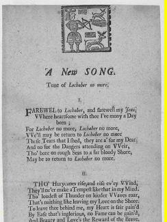
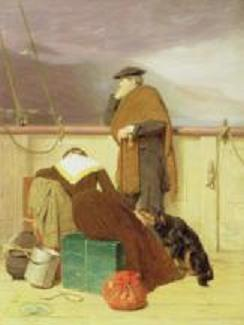

Lochaber No More
Adieu à Lochaber
A fugitive after the 1715 uprising
Tune
Sequenced by Christian SouchonSheet music- Partition
Text by Allan Ramsay
First published as a broadside ballad in 1723and in "Tea Table Miscellany" (1726),
then in David Herd's "Ancient and Modern Scottish Songs" (1769 or 1776)
and in Johnson's "Scots Musical Museum Volume I" (1787, no. 95, page 96).
To the Text:
|
In 1723 Ramsay's poem is published without tune as a broadside ballad, then in 1726 with the tune
"Lochaber"
in "Tea Table Miscellany Vol. II", and in Thomson's "Orpheus Caledonius Vol. II" in 1733. This version, embedded in the present page, is drawn from "Scots Musical Museum Ist Part" 1787 - N° 95.
Very likely Ramsay was inspired by an original now lost. In a note on "Lochaber" in the "Museum", captain Ridell remarks: "The words here given to 'Lochaber' were composed by an unfortunate fugitive on account of being concerned in the affair of 1715". Source: Cambridge History of English and American Literature in 18 volumes (1907-1921)- Volume X |
En 1723, le poème de Ramsay est publié sans mélodie sous forme de feuille volante ("broadside"), puis en 1726 avec la mélodie
"Lochaber"
dans "Tea Table Miscellany Vol II", enfin dans "Orpheus Caledonius Vol II" de Thomson en 1733. Cette version, -le fond sonore de la présenté page, est tirée du "Scots Musical Museum Ière Partie" 1787 - N° 95.
Il est vraisemblable que Ramsay se soit inspiré d'un original aujourd'hui disparu. Dans une note sur "Lochaber" publiée dans le "Musée", la capitaine Ridell remarque: "Les paroles que l'on trouve ici sont d'un malheureux contraint à s'expatrier en raison de sa participation aux événements de 1715". Source: Cambridge History of English and American Literature in 18 volumes (1907-1921)- Volume X |
To the Tune:
|
In 1676 Thomas Duffet's song "Since Coelia's my foe" is published in "New Poems, Songs, Prologues and Epilogues" with no music and in "Choice Ayres, Songs and Dialogues" with a music which bears no resemblance to "Lochaber no more".
Nevertheless, in 1730, the tune "Lochaber no more" appears in "The Lover's Opera" under the name "Since Coelia's my Foe" A tune similar to "Lochaber" was published in 1703 in Playford's "Dancing Master" (12th edition) as "Reeves Maggot" .
According to Bunting ("Ancient Music of Ireland", 1840,1869), "Lochaber" derives from a piece composed by the Irish harpist, Myles O'Reilly (born ca 1635) and a form of this tune appeared in the "Leyden Lyra-Viol MS - 1690-2" as
"King James's March to Ireland"
, modified and renamed "The Breach of Aughrim" by another Irish harpist, Thomas Connellan.(1640-1698)
Source: South Riding Folk Network ("http://folk-network.com) |
En 1676 la chanson de Thomas Duffet "Depuis que Célie est mon ennemie" est publiée dans "New Poems, Songs, Prologues and Epilogues" sans accompagnement musical et dans "Choice Ayres, Songs and Dialogues" avec une mélodie qui ne ressemble en rien à "Lochaber no more".
Mais, en 1730, la mélodie "Lochaber no more" apparaît dans "L'Opéra de l'amant" sous le titre "Depuis que Célie est mon ennemie" Un air semblable à "Lochaber" est publié en 1703 par Playford dans son "Maître à danser" (12ième édition) sous le titre "Reeves Maggot" . Selon Bunting ("Ancient Music of Ireland", 1840,1869), "Lochaber" est dérivé d'un morceau du harpiste irlandais Myles O'Reilly (né vers 1635) et une version de cette mélodie apparaît dans le manuscrit "Lyre-viole de Leyde" sous le nom de "Marche pour l'entrée du Roi Jacques en Irlande" , puis, modifiée et rebaptisée "La trahison d'Aughrim" par un autre harpiste irlandais, Thomas Connellan (1686-1757). Une mélodie tout à fait semblable, intitulée "Limbrick (=Limerick)'s Lamentation" fut publiée dans l'ouvrage de Daniel Wright's "Aria di Camera, being a choice collection of Scotch, Irish and Welsh airs" qu'on a pu dater de 1730.
Robert Burns écrivit les quelques couplets de son "Lord Randal" (1794) pour être chantés sur une autre version de cette mélodie:
Lord Ronald, mon fils
Source: South Riding Folk Network ("http://folk-network.com) |
The stately version sequenced by Lesley Nelson is very beautiful



|
1. Farewell to Lochaber, and farewell, my Jean,
Where heartsome with thee I have mony days been; For Lochaber no more, Lochaber no more, We'll maybe return to Lochaber no more. These tears that I shed, they are all for my Dear, And no' for the dangers attending on Weir(*); Tho' bore on rough seas to a far bloody Shore, Maybe to return to Lochaber no more. 2. Tho' hurricanes rise, and rise ev'ry wind, They'll ne'er make a tempest like that in my mind; Tho' loudest of thunder on louder waves roar, That's naithing like leaving my love on the shore. To leave thee behind me, my heart is sair pain'd; By ease that's inglorious, no fame can be gain'd; And beauty and love's the reward of the brave: And I must deserve it before I can crave. 3. Then glory, my Jeany, maun plead my excuse: Since Honour commands me, how can I refuse! Without it, I ne'er can have merit for thee; And without thy favour, I'd better not be! I gae, then, my lass, to win honour and fame, And if I should luck to come gloriously hame, A heart I will bring thee with love running o'er, And then I'll leave thee and Lochaber no more.
|
1. Adieu donc, Lochaber, ma chère Jeanne, adieu!
Nous vécûmes ici tant de moments heureux. Je quitte Lochaber sans espoir de retour. Je ne crois pas pouvoir y revenir un jour. C'est pour ma bien-aimée que je verse des pleurs Et non par crainte de la guerre (*) et ses terreurs. Le flot m'emporte vers des bords rougis de sang, Peut-être pour toujours, loin de ces lieux charmants. 2. L'ouragan peut mugir et redoubler d'efforts, La tempête en mon âme est plus terrible encor. Le fracas grandissant de l'onde et du tonnerre Ne sont rien pour qui fuit celle qui lui fut chère. Te quitter, mon amie, me peine, il faut me croire, Mais le bien-être obscur exclut toujours la gloire. Au brave est réservée la beauté, l'amour tendre: Je dois les mériter si je veux y prétendre. 3. La gloire donc, Jeannette, excuse mon départ: Se soustraire à l'honneur est le fait du couard ! Ce titre à notre hymen, qui d'autre le délivre? Et sans ton affection j'aime mieux ne point vivre! Je pars, ma chère enfant, recueillir ces lauriers. S'il m'échoit de pouvoir en orner mon foyer, Je reviendrai vers toi, le coeur rempli d'amour, Pour vivre à Lochaber le reste de mes jours. (Trad. Ch.Souchon (c) 2005) |
|
(*)
the "dangers of weir (war)" are probably those of the 1715 Jacobite Uprising.
The illustration was painted by John Watson Nicol in 1883, one year after riots on the Isle of Skye, with the title "Lochaber no more". Nevertheless it is to put in connection with the aftermath of the Highland evictions , since it represents a Highland emigrant looking back to shore as a ship takes him and his wife away for ever from home. |
(*)
"le danger et la guerre" font probablement allusion au soulèvement Jacobite de 1715.
L'illustration est un tableau de John Watson Nicol, peint en 1883, un an après des émeutes sur l'Ile de Skye, et qu'il intitula "Lochaber no more". Cependant, il faut la mettre en rapport avec le thème des "évictions" , puisqu'elle représente un émigrant des Highlands qui jette, depuis le bateau, un dernier regard sur le rivage de sa terre natale qu'il quitte, avec sa femme, pour toujours. |